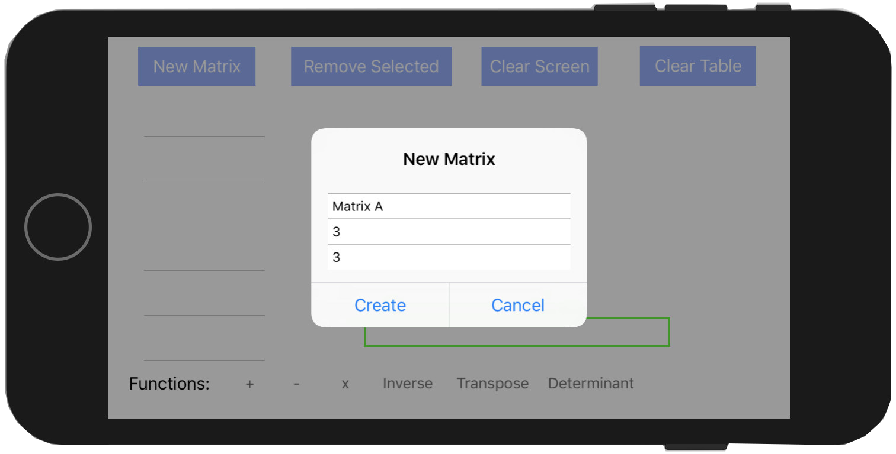
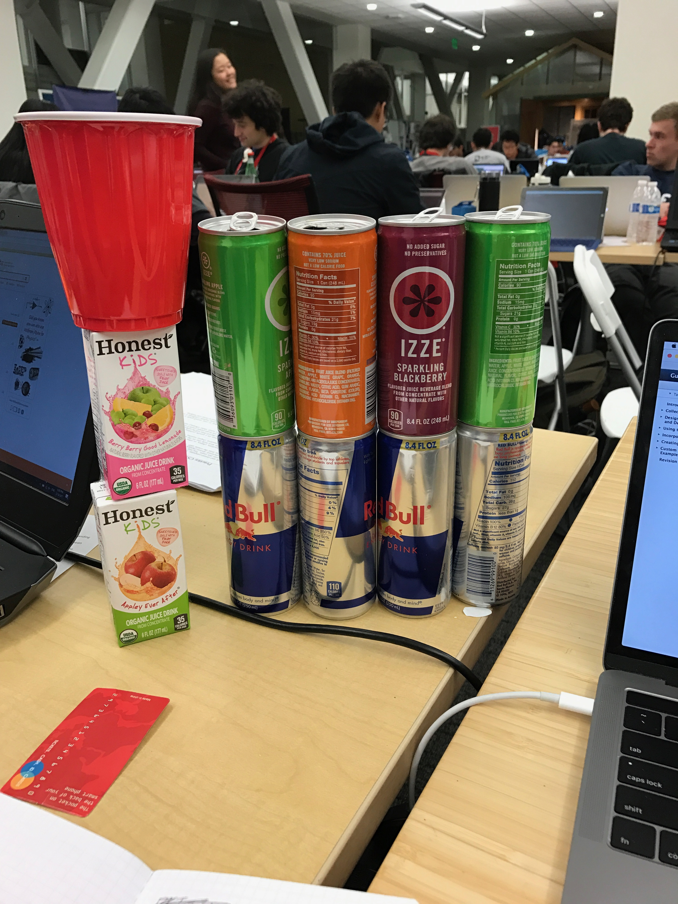

Creating a matrix
TreeHacks Project 2017
"The world of matrices and linear algebra can be interesting, but also very perplexing for students who are developing their abstract reasoning. MaTricks (MAY-tricks) is an iOS app written in Swift that is designed to help students learn about matrices and their operations. In MaTricks, users can input custom matrices and perform operations on them. Through a popup and text view interface, users follow the prompts to create and save matrices. The app allows for error checking for the dimensions in operations such as inverse or the determinant."
Our group of four came into TreeHacks with three computers, a couple water bottles, and pretty much no idea of what to do. After some deliberation we decided on building MaTricks. None of us had any previous Swift experience, and we wanted to try our hand at app development and see how much we could pick up in 36 hours.
In the end we were moderately successful. We had created a single page app that, although a little jank, let the user perform matrix operations. We consumed a lot of food and caffeine and got a lot of free stuff, so all in all I'd say it was a fun experience. My Swift knowledge is tenuous at best, but it's no longer a foreign entity. I also realized I can't function unless I get eight hours of sleep... sorry team.
Check out the github here.
Creating a matrix
Multiplying matrices
Finding a determinant